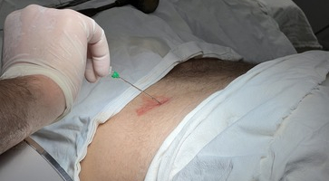
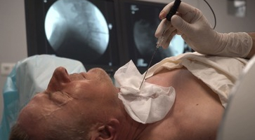
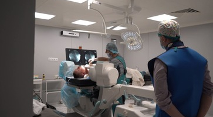
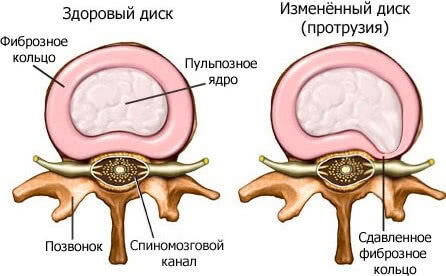
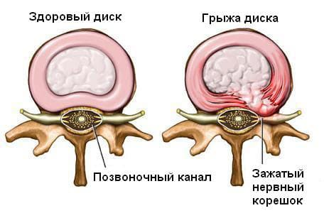
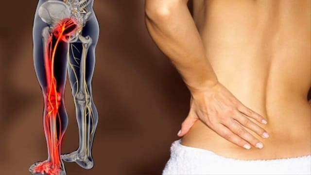
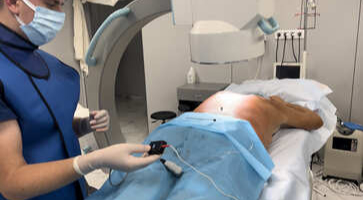
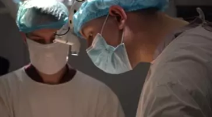
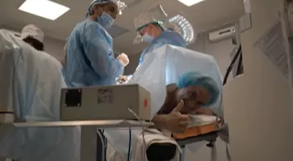
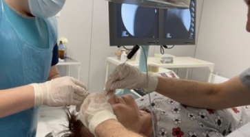

Наші процедури не потребують відкритого хірургічного втручання - відповідно немає періоду відновлення та
рубця
Без наркозу
Процедури виконуються під місцевою анестезією (новокаїн, лідокаїн) - не потребують інтубації
Процедура одного дня
Пацієнти того ж дня можуть повернутися додому, адже ефект помітний ще під час процедури
Гарантія результату без таблеток та уколів
Ми просимо пацієнтів не вживати пігулок до процедури для об'єктивної оцінки результату
Нуклеопластика
Холодноплазменна нуклеопластика - це малоінвазивна операція, яка виконується під місцевою анестезією через
пункційну голку, введену в порожнину міжхребцевого диску.
При нуклеопластиці вплив на тканину диска проводиться холодною плазмою. Під час операції ведеться постійний
рентген контроль за допомогою ЕОПа. Безсумнівною перевагою є високоточний вплив на тканини при відсутності
обпалювального ефекту. Операція проводиться без наркозу, без розрізу.



В яких випадках рекомендована процедура?
*Для визначення причини болю - необхідна консультація спеціаліста та виконання МРТ
Протрузія міжхребцевого диску
Це випуклість міжхребцевого диску без розриву фіброзного кільця.
Якщо ви вже зробили МРТ поперекового чи шийного відділу хребта, та вам описали протрузію - відправте МРТ
на
viber чи telegram нашому лікарю для безкоштовної консультації.


Грижа міжхребцевого диску
Це вихід вмісту міжхребцевого диску в спинномозковий канал. Для виявлення грижі міжхребцевого диска,
необхідно зробити МРТ.
Біль в спині, що віддає у ногу (при відсутності діагнозу)
Чому проблема в спині, а болить також нога?
Що таке защемлення стегнового нерву?
Стегновий нерв формується з поперекових спинномозкових корінців, потім ці корінці переплітаються між собою
й утворюють основний стовбур стегнового нерву, саме тому болить поперек і віддає в ногу.

Холодноплазменна нуклеопластика
— це малоінвазивна операція, суть якої полягає в
«випаровуванні»
плазмою
«зайвої» речовини диска. В результаті декомпресії диска, протрузія зникає, а разом з нею і всі
симптоми
захворювання.
Хірург вводить в пошкоджений диск пункційну голку в електродом виключно під контролем рентгену, що
гарантує
безпечність процедури.
Втручання не пов’язане з болем, не вимагає післяопераційної реабілітації, не має протипоказань за віком.
Ускладнення практично не зустрічаються.
Полегшення, як правило, настає одразу ж після проведення процедури, але повне усунення всіх симптомів
відбувається через два місяці після операції. Цей період необхідний для згасання пов’язаного з протрузією
запального процесу, а також для відновлення пошкодженої нервової тканини.
Нуклеопластика — більше 25 років є найбільш популярної процедурою при протрузіях та грижах, в провідних
клініках Європи та США.
Основні переваги нуклеопластики
Швидкість усунення болю в спині
В більшості випадків, усунення болю в спині відбувається одразу після операції. В інших випадках -
протягом декількох наступних днів.
Тривалість — 15 хвилин
Завдяки високотехнологічному обладнанню та простоті операції, середній час її виконання — 10-15 хвилин. Не
потребує загального наркозу, але виконується місцева анестезія.
Безпечність та контрольованість
Кожен міліметр введення електроду контролюється через рентгенівський апарат, що робить неможливим
пошкодження нервових структур.
Короткий реабілітаційний період
Оскільки хребет зберігає природню біомеханіку, пацієнти можуть повертатися до своїх справ вже через 30
хвилин після нуклеопластики. Більшість пацієнтів виходять на роботу на наступний день.
Відсутність ускладнень та шрамів
Низький рівень ризику ускладнень — менше 0,1%. Відсутність рубців та шрамів, оскільки операція проходить
без жодних розрізів або розтинів.
Амбулаторна процедура
Оскільки ця процедура відноситься до малоінвазивних, тобто не завдає значної травми тканинам і органам
пацієнта, вона виконується без госпіталізації до лікарні, відповідно, виписка відбувається в той же день.
Хід процедури
Електрод заводиться в міжхребцевий диск під контролем рентген-установки. Під час проходження електроду в
міжхребцевий диск знижується внутрішньодисковий тиск тим самим даючи моментний ефект. Далі виконуються
почергова коагуляція та абляція вмісту міжхребцевого диску, тим самим зменшуючи зону тиску на нервовий
корінець (‘’грижа всихає’’).
Весь процес триває 10-15 хвилин.
Комп'ютерне моделювання операції холодноплазменної нуклеопластики
Перед процедурою необхідно обстежитися у лікаря
Оскільки при деяких діагнозах, таких як стеноз чи зміщення хребців не рекоменується проводити нуклеопластику
Этапи усунення болю в спині при грижі чи протрузії
Онлайн консультація
Залиште контактні дані для отримання онлайн консультації лікаря. Він проконсультує вас, чи є
нуклеопластика оптимальним рішенням у вашому випадку.
МРТ
Обов'язковий етап - МРТ поперекового або шийного відділу хребта, щоб бути впевненними у відсутності
протипоказань у вашому випадку.
Фінальне обстеження
Отримавши результати всіх аналізів, необхідно приїхати в нашу клініку для проведення фінального
обстеження.
Процедура нуклеопластики
Проведення малоінвазивної операції під місцевою анастезією. Тривалість виконання — 10-15 хвилин.
2 години в стані cпокою
Після операції рекомендовано декілька годин знаходитися в стані покою та не робити навантаження на хребет.
При бажанні, можете залишитися на добу під наглядом лікарів.
Відсутність болю в спині
У 80% випадків результат відчувається одразу після процедури. В інших випадках - протягом декількох днів.
Відгуки пацієнтів
1. Пацієнтка: 74 роки
Скарги: на біль в попереку які віддають в обидві ноги.
Хворіє протягом тривалого часу.
Діагноз: Грижа міжхребцевого диска на рівні L4-L5.
Процедура: Холодноплазменна нуклеопластика.
2. Пацієнт: 63 роки
Скарги: на біль в попереку які віддають в праву ногу.
Хворіє протягом одного тижня.
Діагноз: Грижа міжхребцевого диска на рівні L5-S1 праворуч.
Процедура: Холодноплазменна нуклеопластика.
3. Пацієнтка:
Грижа (кила) шийного відділу хребта проявляє себе болями в шиї з іррадіацією болю в плечі, лопатки,
руки та онімінням 4 - 5 го пальців руки.
При грижах в шийному відділі хребта також застосовується сучасний лазерно-вапоризаційний метод -
нуклеопластика. На відео пацієнтка після даної процедури.
Замість відкритого оперативного втручання з розрізом та наркозом і обов'язковим встановленням
імпланта - для неї все обійшлося невеликим проколом в шкірі та введенням електроду і подальшою
вапоризацією міжхребцевої грижі.
Нейромодуляція
Суть методу полягає в блокуванні проведення неприємних больових імпульсів з спини та нижніх кінцівок до
головного мозку. Під час самої процедури пацієнт спостерігає відчуття масажу вище місця болю. Процедура
проводиться під місцевою анестезією (як укол в сідницю) без розрізу та наркозу.



Відгуки пацієнтів
1. Пацієнтка: 74 роки
Скарги: на біль в попереку з іррадіацією в обидві ноги.
Синдром карпального каналу – захворювання, що виникає внаслідок стиснення серединного нерву потовщеною
карпальною
зв’язкою в ділянці зап’ястя та долоні.
Дана патологія має наступні прояви:
відчуття оніміння, болю та пекучості в великому, вказівному, середньому та половині безіменного пальцях;
слабкості в кисті, що прогресивно наростає;
Людям, котрі потерпають від цього недугу, важко виконувати прості речі: довго утримувати мобільний телефон,
писати,
прибирати, зачіплювати ґудзик, чистити картоплю та інше. Також, що немало важливо, значно порушується сон,
хворі
прокидаються вночі від болю та затерпання в кисті, виникає потреба в її струшуванні. Через деякий час всихають
м’язів в
ділянці підвищення великого пальця та значно обмежуються руки пальцями та кистю, виникає пограничний з
інвалідністю
стан!
Відгуки пацієнтів
Синдром кубітального каналу
Синдром кубітального (ліктьового) каналу знаходиться на другому місці по частоті серед тунельних нейропатій
верхньої кінцівки (перше місце займає синдром карпального (зап’ястного) каналу). Найпоширеніша причина
виникнення цього синдрому – регулярна «мікротравматизація» в місці проходження ліктьового нерва через область
ліктьового суглоба. Це може статися внаслідок довготривалого тиску на суглоб перебуваючі в одноманітній позі,
наприклад: при тривалій телефонній розмові, при опорі руки на кришку столу, або при звичці водія виставляти
руку у вікно керуючі транспортним засобом.
Невралгія трійчастого нерва
Трійчаста невралгія — патологічний стан, який характеризується раптовим виникненням сильного пекучого болю.
Переважно біль виникає на одній стороні нижньої щелепи чи на якійсь щоці. Також уражатися можуть носова,
лобова, очна ділянки. Виникнення цих болісних відчуттів пов'язані з ураженням в системі трійчастого нерва,
гілки якого іннервують ці ділянки. Біль триває від декількох секунд до однієї - двох хвилин. Періоди, коли
виникають напади, можуть тривати день, тиждень, а у деяких випадках — місяцями і роками. Біль провокують
найменші дотики і маніпуляції із шкірою обличчя: гоління, макіяж, тощо. Чищення зубів, жування теж викликають
біль. Фактори, які уражають трійчастий нерв — це природні звуження отворів, тиск на нерв пухлини, аневризми,
травми. Трапляється невралгія, коли причину хвороби не визначають. Жінки вдвічі частіше хворіють, ніж
чоловіки. Вікових обмежень немає, хоча частіше хворіють люди до 40 років.

Відгуки пацієнтів
1. Пацієнтка: 72 роки
Скарги: на біль в лобній ділянці та верхній щелепі.
Хворіє протягом тривалого часу.
Діагноз: Невралгія І та ІІ гілки трійчастого нерва.
Процедура: Радіочастотна абляція.
Вертебропластика
Вертебропластика — це мінімально інвазивна операція, метою якої є фіксація перелому хребця й усунення болю,
викликаного цим переломом. Процедура вертебропластики проводиться через прокол шкіри (на відміну від
відкритого втручання із застосуванням розрізу). У тіло зламаного хребця вводиться спеціальна голка, через неї
в хребець подається кістковий цемент, що заповнює місце розлому й застигає протягом 10 хвилин.
Мікродискектомія
Опреція проводиться під спінальною анестезією (пацієнт перебуває у свідомості лише не відчуває болю).
Тривалість зазвичай близько 30 хвилин.
Розріз близько 3 см, косметичний шов.
Реабілітаційного періоду немає!
Дозовляється сидіти, стояти, ходити!
Активізація на наступний день.
Виписка на наступний день (за бажанням пацієнта).
Відгуки пацієнтів
1. Пацієнт: 32 роки
Скарги: на біль в попереку з іррадіацією в ліву ногу.
Хворіє протягом декількох тижнів.
Діагноз: Грижа міжхребцевого диска на рівні L4-L5 ліворуч.